30 秒速览 · 30-sec overview
一个入口承接多种输入；状态与异常穷举；Web 与 Mac 按同一套设计稿实现并保持一致。
三个判断：入口主张统一输入框而不是先选通道；图片区推翻四个评审推荐的网格，选了不撑高弹窗的横滑方案 E，现网按它做；评审会上自己砍掉动效与三项视觉加法。上线后两端验收：Web 27 条 UI 差异 + 15 条体验疑点，Mac 32 + 15；5 条疑点引 PRD 原句，开发修了。
真实上线Web / MacAI 整理 · Agent 状态设计PRD ↔ 设计稿 ↔ 现网审计
01 用户要什么
丢进去就整理好，不用先分类
产品是 Flowtica 的「帮你理」，Web 与 Mac 端（移动端另有三通道版）。输入文字 / 图片 → AI 自动整理成 Memo（备忘）或 To-do；音频 → 高级转写与总结，生成 Meeting。
本期目标五条：入口旁弹通道菜单（Quick Input / Upload audio）；Quick Input 里文字和图片可以同时存在、图片多选；Finder「用 Flowtica 打开」直接带入对应弹窗、跳过通道菜单；文字图片由 AI 整理、音频直接进转写与总结；关闭、失败、额度不足和异步生成期间，同一次提交不产生重复任务，用户总能找回结果。
Organize as 提供 Auto / To-do / Memo，默认 Auto：由 AI 在 Memo 与 To-do 之间判断，一次输入可以生成一张 Memo、一个或多个 To-do，或两者同时。
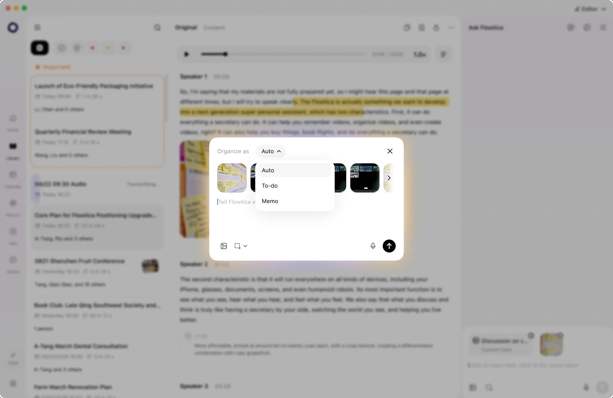
Quick Input · Organize as 三项（Auto 默认）。设计稿。
同构产品里 mymind、Mem、Notion 都是「一个入口丢进去」；Gemini Notebook 统一入口但先选来源类型；Plaud、讯飞、Limitless、钉钉听记是录音专用。8 家里没有一家在整理中途停下来问用户。
02 问题与前因
上线前要解决的三件事
Mac 已有「帮助处理」入口，但没有形成文字、图片、音频与桌面文件一致的整理队列；移动端是三个通道（纯文本 / 添加照片 / 上传音频），Mac 收窄为两个。
- 一个入口承接多种输入：文字 / 图片同框，音频单独。
- 状态与异常要穷举：草稿、拖拽、额度不足、失败、无网、处理中、多图。
- Web 与 Mac 按同一套设计稿实现并保持一致。
PRD 里的硬规则（设计要逐条接住）
- 5000 字符上限，4000 起显示计数器，满额后麦克风不可用。
- 图片最多 10 张，超限提示但不清空；发送成功清空草稿，失败保留原文与分类选择。
- 任务条（彩条）+ 多任务堆叠 + 失败态 Retry；类别 +1 提示；草稿自动保存。
- 拖文件到主窗或 Dock 图标显示整窗深色悬停态「Release to organize with Flowtica」；拖音频进 Quick Input 先询问是否切通道。
- Finder 带入时有草稿冲突弹窗（Discard / Save draft）；语音取消后 10 秒内可撤销，转写 20 秒无响应判失败、重试不限次；语音积分与 AI 互动量是两套额度。
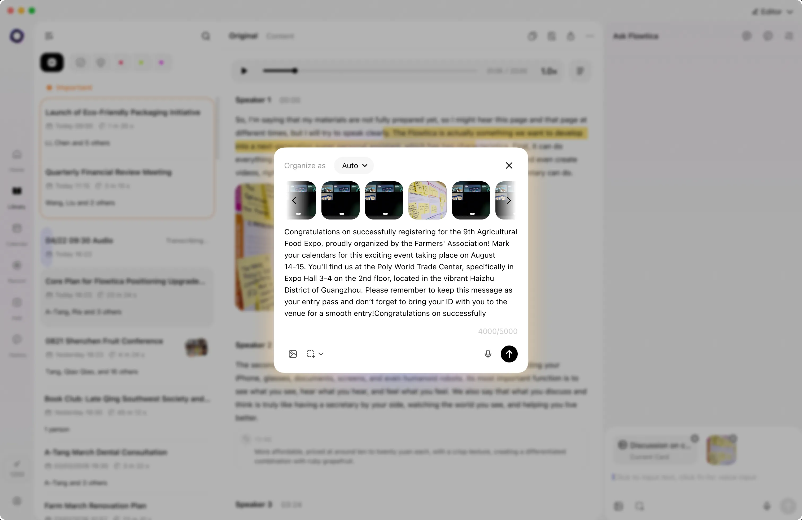
计数器三态：4000 起出现、接近上限、满额。
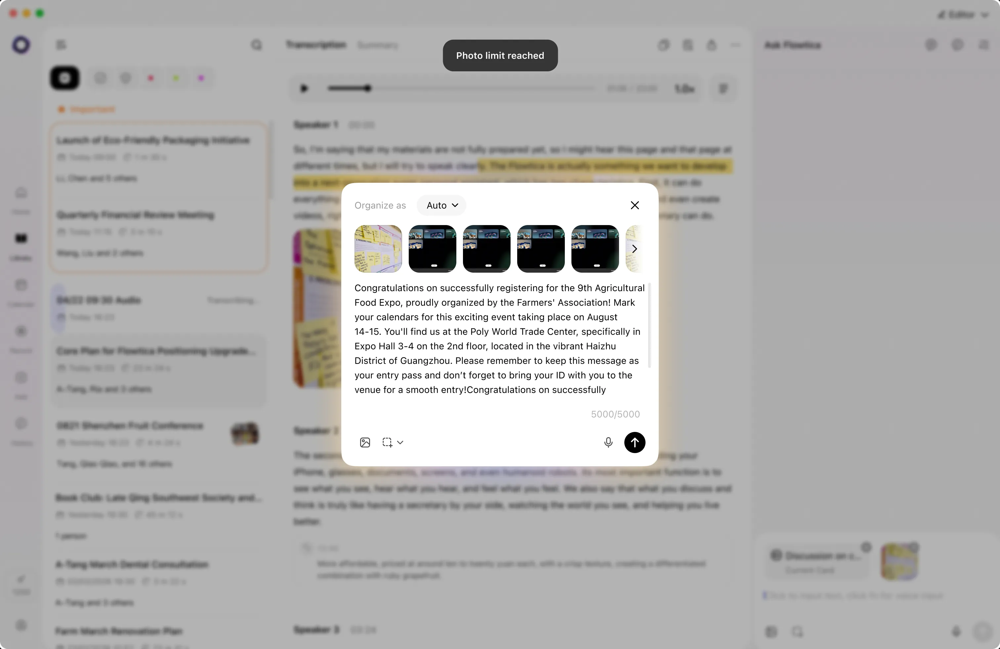
粘贴超长：超限 Toast + 长文截断态。
03 职责与协作边界
谁定了什么
| 谁 | 定了什么 |
|---|
| PM | 需求与范围：PRD 08-13 → v6 08-20（通道选择 + 双弹窗架构）；另有组长原版稿（多图与文字 / 单音频态 / Loading / 额度不足）。 |
| 我 | 主链路 + 边缘场景全部画板（85 块 1512×982）；08-11 调研并提出「统一输入框」主案；08-12 入口弹窗；08-23 任务条方案 A → 自己的胶囊组件；08-23 多图网格 B；08-24 三张美化图大图（Finder 右键菜单用 Apple 官方组件）、Todo 图集母组件；08-24/25 拖拽悬停两帧；09-04 Quick Input 图片区方案 E 及 5 处纠正；数值铁律与交付标准化（取整、偶数优先、画板备注去代号）。 |
| 评审会 8/19 | 砍掉 Quick Input 内图片下载与编辑；要求 Memo 详情加标题 / 时间；留给我多图排布待办。 |
| 开发 | 实现时的简化：任务条变小胶囊、多图整宽竖排（按 PRD 原句「铺满内容区宽度」）、徽标到时间消失。 |
多图网格 B 是我自己在设计稿里改的，不是被 PM 或开发改掉；所以这个案例不写「被改掉的方案」，写「我提出、我取舍、哪些进了现网」。
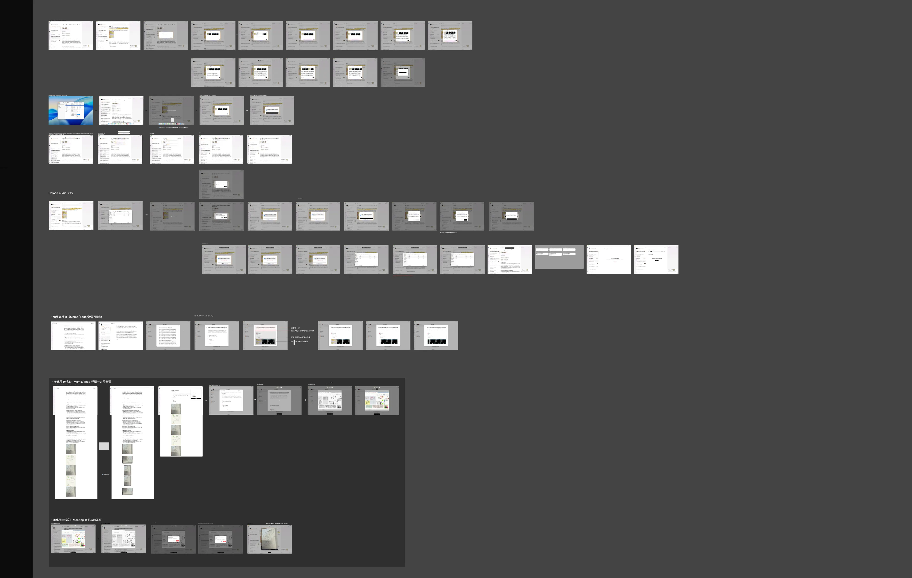
交付区总览：主链路、音频支线、Quick Input 补充态与边缘态、任务条、结果详情、Finder 与 Dock 直达、美化图。命名审计后 122 帧。
04 三个判断
为什么选它、为什么不是别的、代价是什么
01 入口
统一输入框，而不是先选通道
用户要的是「丢进去」，不是「先分类」；mymind / Mem / Notion 都不问。PRD 本期分通道是技术考虑：音频走转写管线，要快上传、快结构化。
怎么落地（设计侧判断）：前端一个拖放区 + 按文件类型识别；后端一层路由把文件分到已有的各类型管线（音频转写、图片识别、文本抽取），不是重做管线。真正的风险在视频 / PPT 大文件的上传进度与超时，与入口是否统一无关，要单独设计进度和失败恢复。
代价：识别错类型时要有「改通道」的出口；音频进统一框后仍要走隐私告知与额度检测。
02 图片区
方案 E，推翻四个 AI 评审一致推荐的网格 A
E = 单行横滑 + 渐隐 + 箭头，缩略条不撑高弹窗（弹窗高 380 → 304），输入区始终可见；A 的网格把文字区挤到下面。
代价：6 张起要切成 72 / 8 的缩略尺寸，× 的位置、箭头不要底盘等 5 处细节自己纠正了一轮。
结果：现网两端的缩略条形态与 E 一致。
03 减法
不加动效，不做三项「视觉提升」
hover 图片弹起动效：评审会上自己提出不加；「视觉提升」三项全部否决；评审砍掉 Quick Input 内下载 / 编辑后没有补回。
为什么：本期的价值在「丢进去就整理好」，不在修饰；每多一个动效两端都要再对齐一次。
代价：页面更朴素，视觉分要靠细节一致性拿回来（见 06）。
现状：入口旁弹通道菜单（Quick Input / Upload audio）。
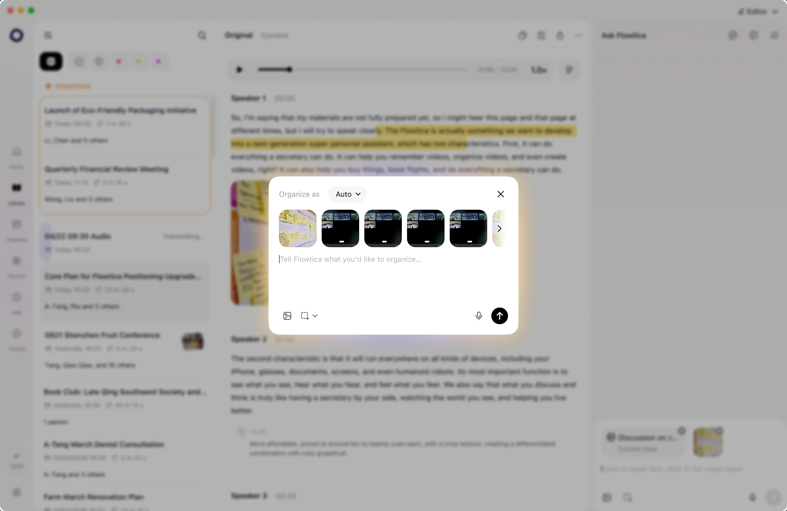
图片区方案 E：单行横滑缩略条，输入区始终可见。
05 主链路 · 状态矩阵 · 异常恢复
同一个入口，不同状态各有去处
左栏 Add→Quick Input（文字 + 计数 / 图片 / 截图 / Organize as / 话筒）→发送→顶部短暂提示→类别 +1 徽标→Memo 详情（Original / Content）→大图查看器
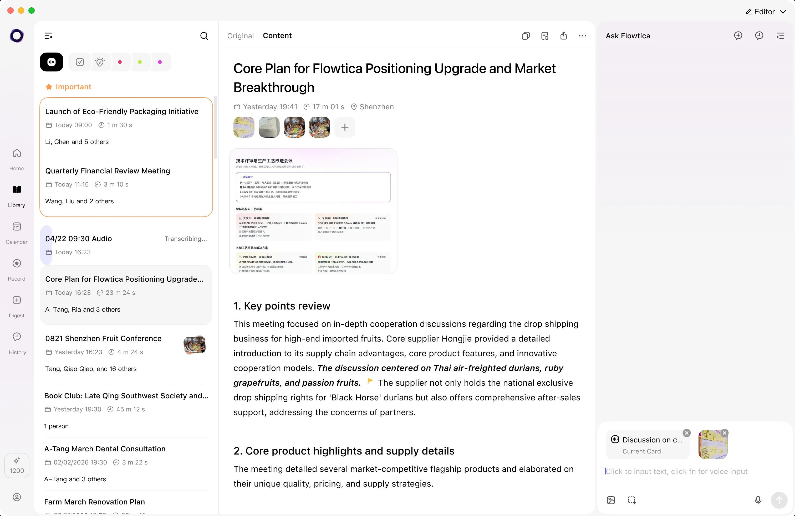
第 1 步 · 首页（＋号入口）
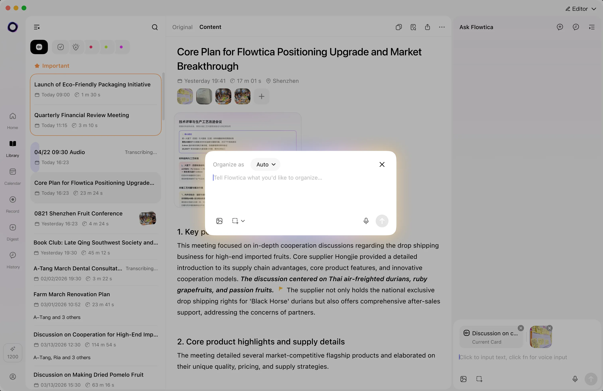
第 3 步 · Quick Input 空态
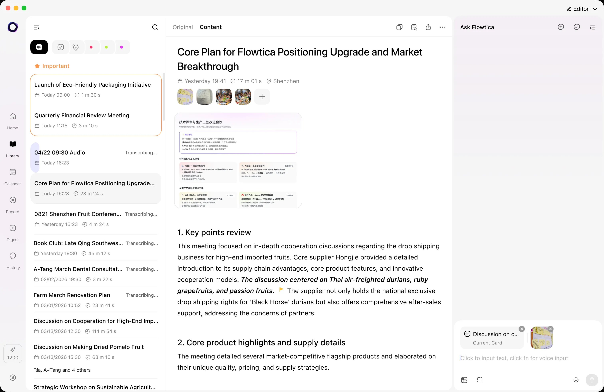
处理中 · 任务条彩条（缩略图 + 摘要 + Processing），hover 展开
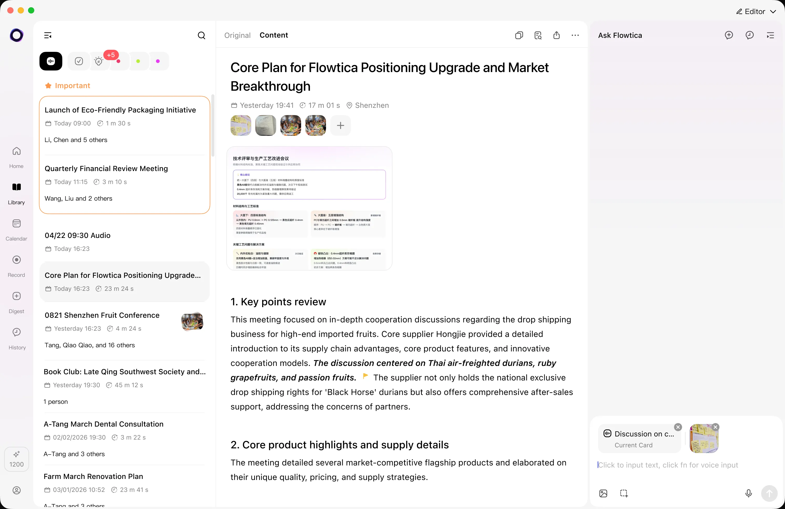
结果 · 类别 +1 徽标累计，进入列表清除
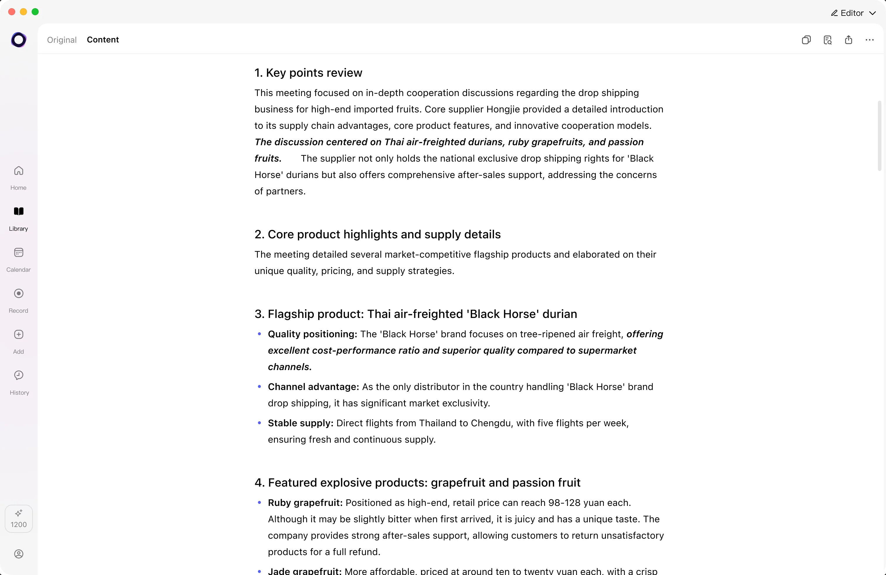
详情 · Memo Content（AI 整理结果）
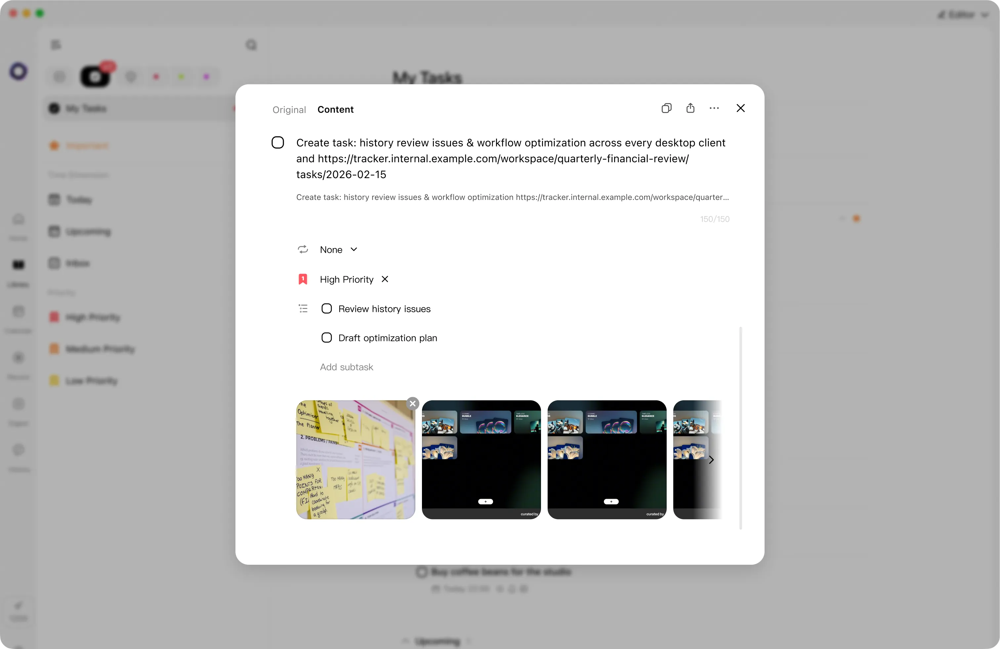
大图 · Todo 图集：大图 + 缩略条 + 底部胶囊
状态矩阵：设计稿覆盖 vs 验收时现网
| 环节 | 默认态 | 边缘 / 异常（设计稿） | 现网（验收时） |
|---|
| 入口 | Add | 通道菜单两项悬停 / 激活 | 直接进 Quick Input（11-03 后通道菜单回来） |
| 输入 | 文字 / 图片 / 话筒 | 4000 起计数器三态；10 张上限气泡 + Toast；录音中话筒置灰；权限被拒引导 | 计数器一打开就显示；超限提示在页顶 3 秒 |
| 发送 | 空态灰 / 有字黑 | 额度不足：提示盖弹窗、保留草稿 | Mac 符合；Web 两套形态 |
| 处理中 | 任务条彩条 | 堆叠；失败态常驻 + Retry；无网等待 | 一闪而过的小胶囊；失败在列表卡 |
| 结果 | +1 徽标累计 | 进入列表清除 | 到时间自己消失（Web 4–6 秒 / Mac 25 秒） |
| 详情 | Original / Content | 处理中详情三步进度；Meeting 多图 | 顶部无标题时间（Web） |
| 大图 | 缩略条 + 底部胶囊 | 删除确认两版；下载 Saved；加载失败 | 无删除 / 箭头；Mac 从 Memo 打开无底栏 |
| 旁路 | 草稿自动保存 | 拖拽整窗蒙层「Release to organize」；拖入音频询问切换；草稿冲突 Discard / Save draft | 无蒙层；Web 重开拼接 |
异常恢复的三条底线
- 同一次提交不重复建任务。
- 失败保留原文与选择，重试不限次。
- 用户总能从任务条或列表找回结果。
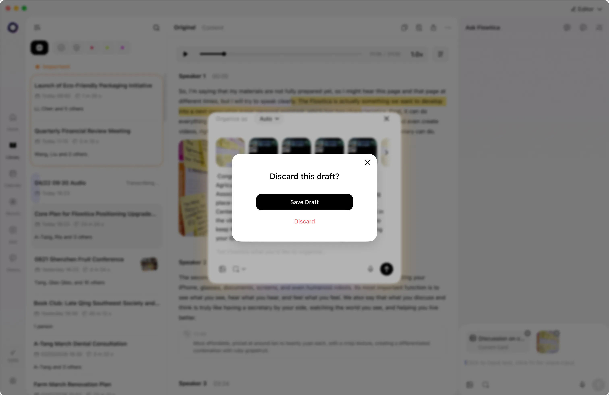
边缘态 · Finder 带入时草稿冲突：Save draft / Discard
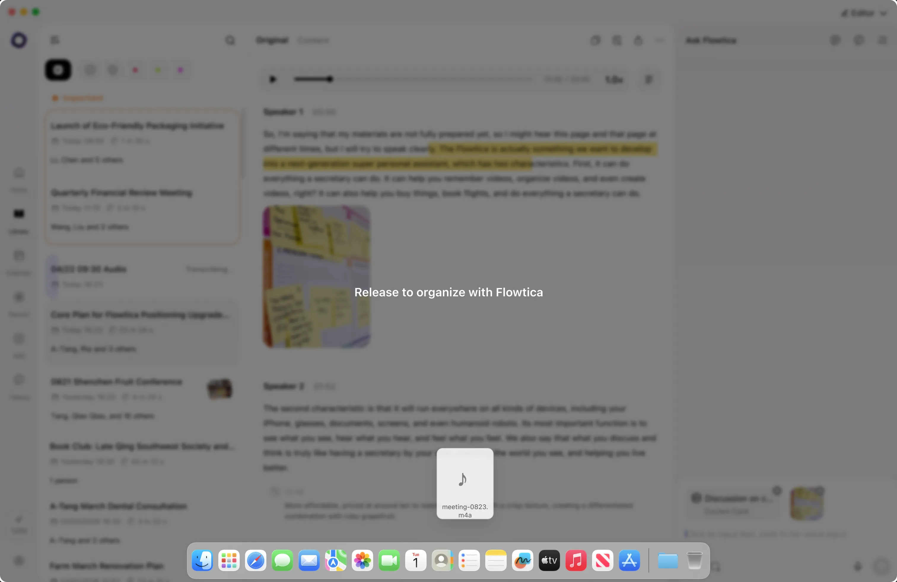
旁路 · 拖拽悬停整窗蒙层「Release to organize」
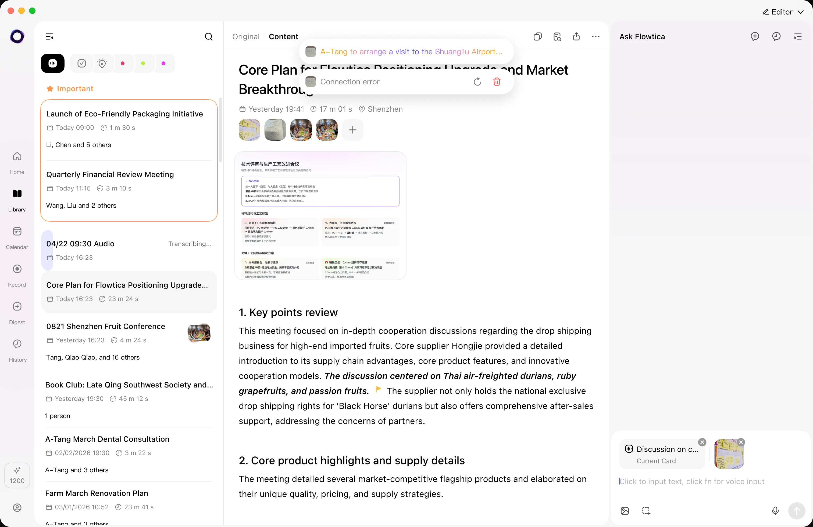
异常 · 任务条失败态常驻，hover 可删除 / Retry
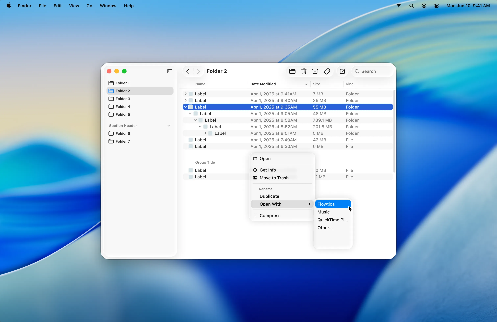
直达 · Finder 右键「用 Flowtica 打开」（Apple 官方组件）
音频支线
音频不进 Quick Input，走单独通道：通道菜单选上传 → 系统文件选择器 → 校验（时长超 5 小时 / 文件不可读 / 单音频限制）→ 隐私告知 → 额度检测 → 转写中彩条。
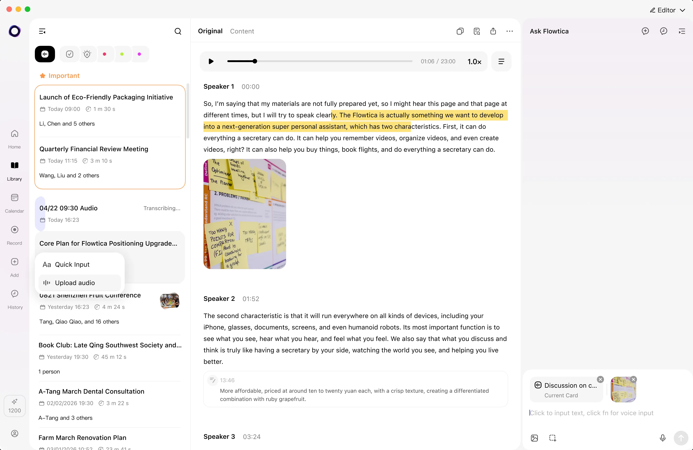
音频 第 1 步 · 通道菜单选上传音频
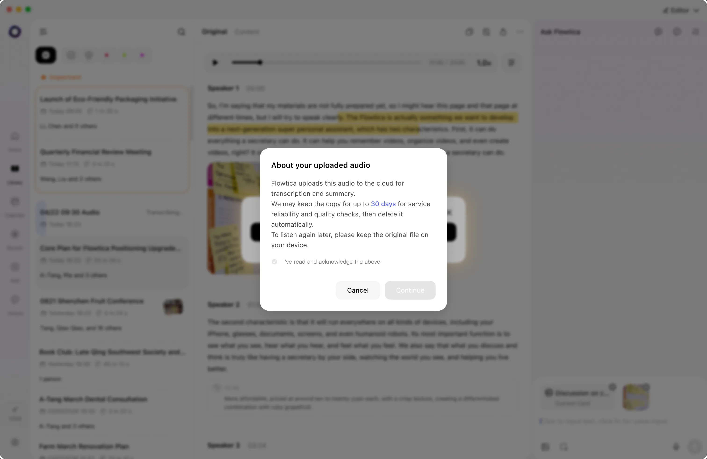
音频 第 5 步 · 隐私告知（未勾选不可继续）
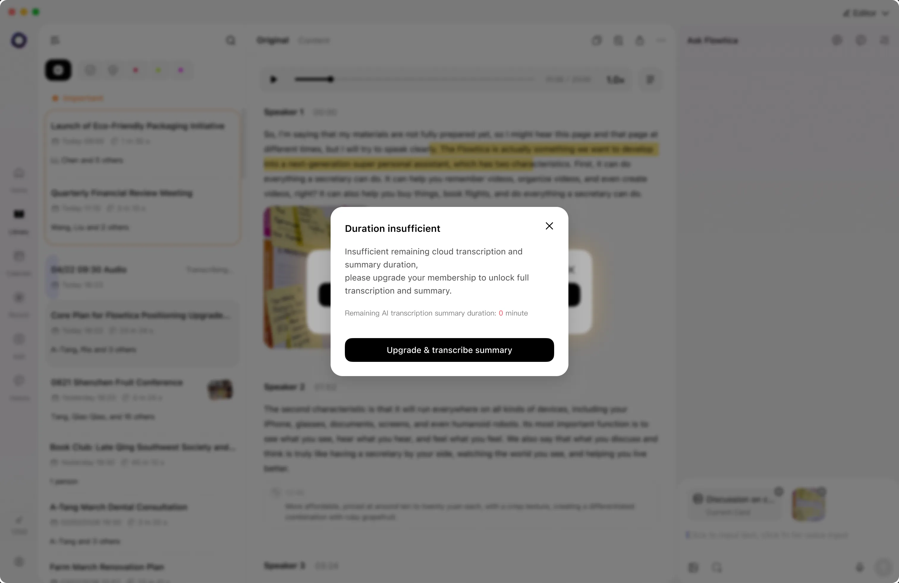
音频 第 7 步 · 额度不足：提示盖弹窗、保留文件
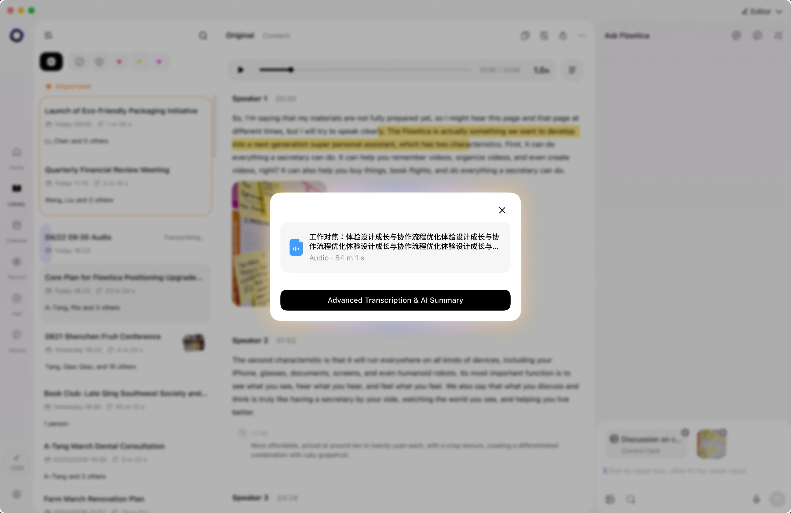
边缘态 · 音频拖进 Quick Input：先询问是否切通道
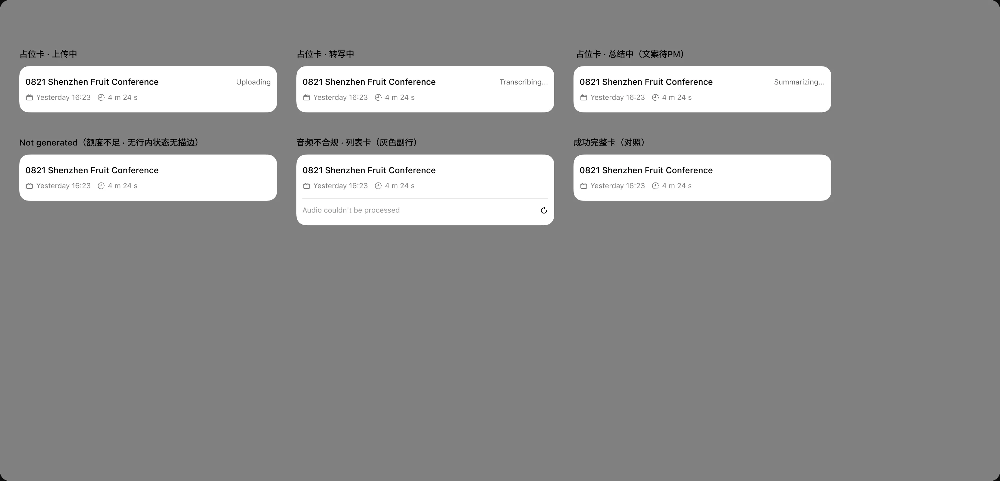
Meeting 卡片状态板：处理中 / 完成 / 失败 / 多图。
未覆盖状态（验收时没触发到）：Web 11 条、Mac 15 条。
06 细节检查过程
PRD、设计稿、现网三方逐帧对照
方法：每条写「位置 + 错的属性 + 设计稿参数」，不写「现测 / 通过」；开发拿到就能打勾。
- Web（10-15）
- 27 条 UI 差异 · 15 条体验疑点 · 11 条未验状态
- Mac（10-19）
- 32 条 UI 差异 · 15 条体验疑点 · 15 条未验状态
- 两端分叉
- 至少 6 处（截图按钮、拖拽、拖入音频、额度形态、徽标停留、大图查看器底栏）
- 引 PRD 原句
- 5 条体验疑点有 PRD 支持（徽标清除时机、草稿覆盖、额度提示覆盖弹窗、付费墙时机）：讲成「实现偏离 PRD」而不是「体验建议」
- 结果
- 疑点开发修了；差异与疑点基本认可
07 结果与限制
已上线；没有使用数据就不写
- Web、Mac 已上线；通道菜单与音频支线 11-03 上线。
- 已知成效：没有可核验的使用数据，不写。
- 限制：验收后 30 条体验疑点的复验没有书面记录；未覆盖状态 11 + 15；多图网格 B、整窗拖拽蒙层、任务条彩条没进现网。
08 个人复盘 · redesign
如果由我定方向，会这样改
说明：以下是上线后的个人复盘方案，不是当时交付；现网以 07 为准。
- 入口往统一输入框走（见 04 判断 01）。
- 捕获时收起 Organize as、默认 Auto；结果页能改分类，加「重新整理」。
- 超限：计数器 4000 才出现、满额换警示色；满 10 张按钮置灰；粘贴超长时说明截掉多少或转附件。
- 语音：光晕随音量、约 5 秒无声换文案、自动补空格；AI 改写可见可退。
- 结果不走任务条，落在一条按时间自动切卡的时间线上；徽标累计、打开分类才清零。
- 结果可溯源：Content 加 AI 标识、标题 + 时间行，每条结论能点回原话 / 原图。
- 多图复用「Todo 图集 · 大图 + 缩略条」；一个查看器组件 + Original / Enhanced 高亮 + 左右箭头。
- 关闭即自动保存，只修重开覆盖与光标；额度统一成一种弹窗：剩余额度 + 重置日期 + 升级主按钮；整窗蒙层「Release to organize」。
扩展中：App 端同一功能（移动端三通道版）、Apple Watch 多端同步（概念，非上线功能）、语音说完即结构化、自动转写与摘要（会议链路）。
09 我会怎么再做一次
先把三条底线做成状态表，再画第一屏
「丢进去 → 整理好 → 找得回」先做成状态表；入口不让用户先分类；所有「看起来更好」的加法放到上线之后。